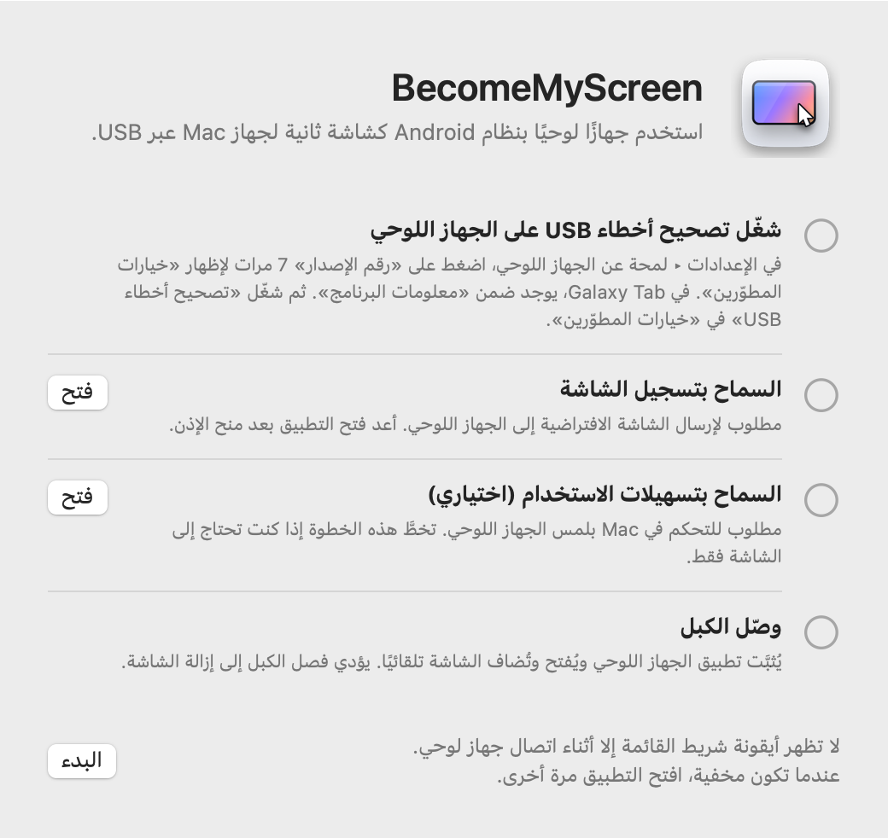
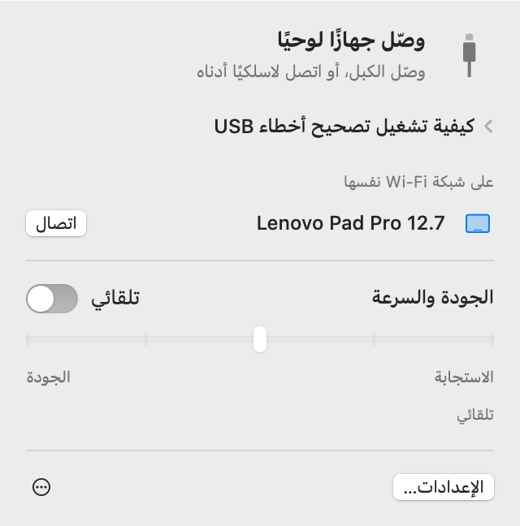
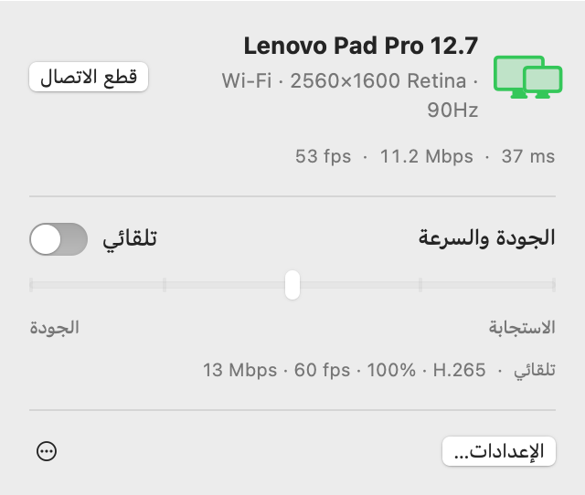
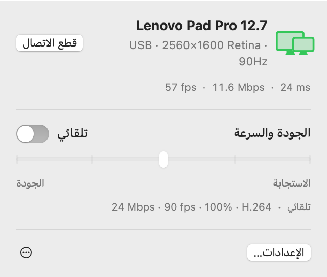
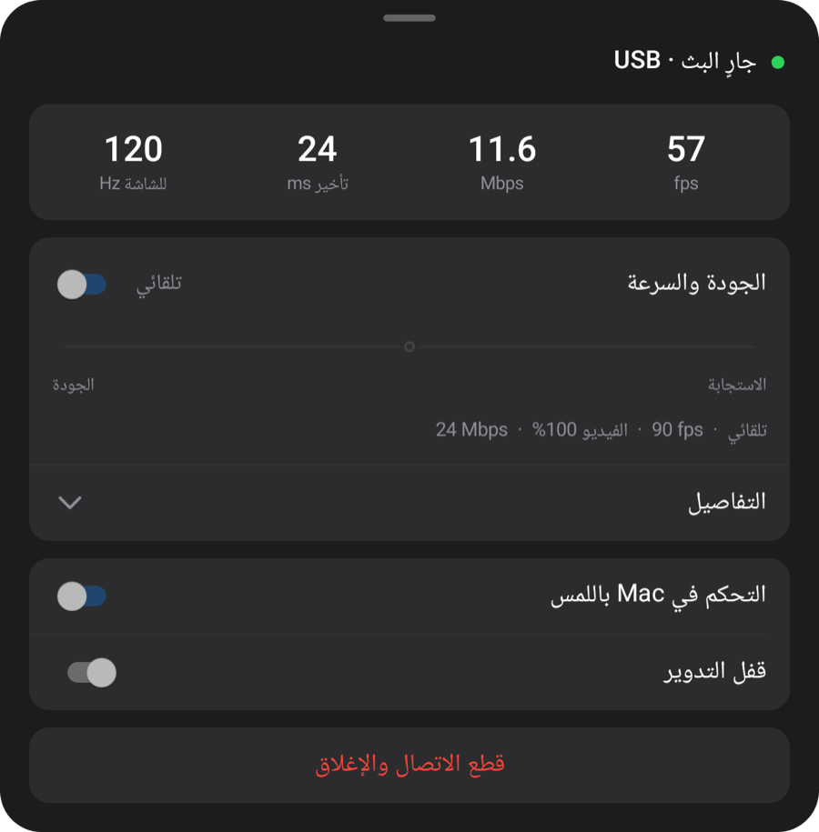
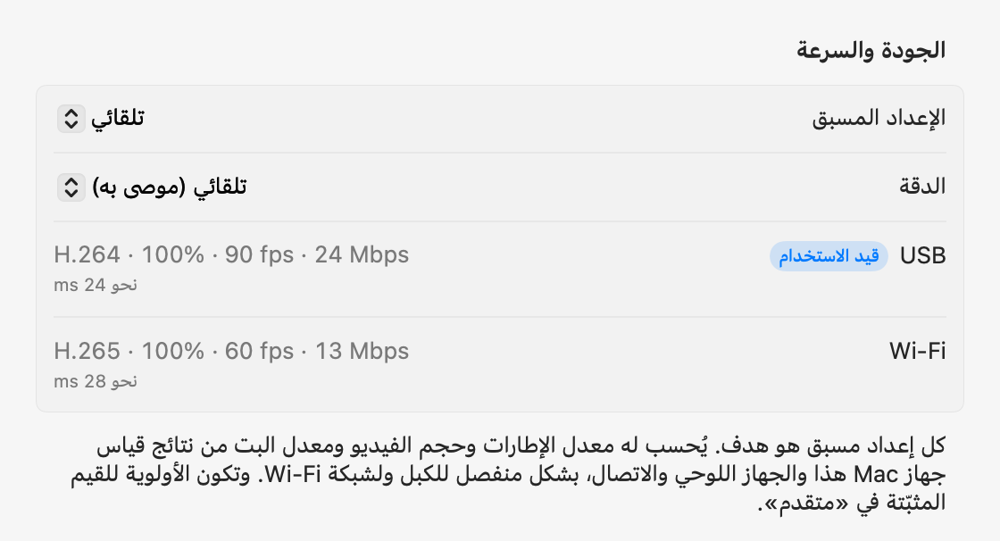

macOS + Windows
جهازك اللوحي.
شاشة حاسوبك.
استخدم جهاز Android اللوحي كشاشة ثانية لجهاز Mac أو Windows. عند التوصيل عبر USB يُثبّت تطبيق الجهاز اللوحي ويُفتح تلقائيًا.
افتح ملف zip، وانقل التطبيق إلى مجلد التطبيقات وافتحه. للاتصال الأول، راجع الإعداد.
افتح هذه الصفحة على حاسوبك لتنزيل تطبيق Mac أو Windows.

1.1.0
Windows
متوفر الآن على Windows 11. تطبيقات أصلية لمعالجات Intel/AMD x64 وARM64 في تنزيل واحد.

شغّل برنامج التثبيت وصِل الجهاز اللوحي واسمح بتصحيح أخطاء USB. يُنزّل محرك الفيديو عند التشغيل الأول.
أُجريت القياسات التالية على Mac.
الإعداد
لا تُجري الإعداد إلا مرة واحدة. بعد ذلك، يؤدي توصيل الكبل إلى إضافة الشاشة، وعلى شبكة Wi‑Fi نفسها يتم الاتصال دون كبل.
-
ثبّت تطبيق Mac
افتح ملف zip الذي نزّلته، وانقل BecomeMyScreen إلى مجلد التطبيقات وافتحه. اسمح بتسجيل الشاشة، ثم افتح التطبيق مرة أخرى.
-
شغّل تصحيح أخطاء USB على الجهاز اللوحي
في الإعدادات › لمحة عن الجهاز اللوحي، اضغط على «رقم الإصدار» سبع مرات لإظهار «خيارات المطوّرين». في Galaxy Tab، يوجد ضمن «معلومات البرنامج». ثم شغّل «تصحيح أخطاء USB» في «خيارات المطوّرين».
-
وصّل الكبل
عندما يسألك الجهاز اللوحي عمّا إذا كنت تريد السماح بتصحيح أخطاء USB، حدّد «السماح دائمًا من هذا الكمبيوتر» واضغط على «سماح». يثبّت Mac تطبيق الجهاز اللوحي ويفتحه، ثم يضيف الشاشة. لا حاجة إلى تنزيل تطبيق منفصل للجهاز اللوحي.

السرعة
الوقت المنقضي من لحظة التقاط Mac للشاشة حتى يرسمها الجهاز اللوحي. تم القياس باستخدام Lenovo Pad Pro 12.7 وجهاز Mac بشريحة M4 Pro.
| حجم الفيديو | 60 fps | 120 fps |
|---|---|---|
| 100%2560×1600 | 20 ms | 24 ms |
| 75%1920×1200 | 14 ms | 19 ms |
| 50%1280×800 | 11 ms | 16 ms |
يضغط المُرمّز المادي في شريحة Apple الشاشة بتنسيق H.264 ويرسلها عبر USB، ويرسم مفكك الترميز المادي في الجهاز اللوحي كل إطار فور وصوله. عند الاتصال الأول، يقيس الوضع «تلقائي» قدرة مفكك الترميز ويختار أعلى معدل إطارات لا يتأخر معه. على هذا الجهاز اللوحي اختار 90 fps.
طريقة القياس: بعد تصحيح فرق التوقيت بين ساعتي الجهازين، قسنا الوقت بين التقاط Mac لإطار ورسم الجهاز اللوحي لهذا الإطار.
لاسلكي
يعمل الجهاز اللوحي الذي وُصّل مرة واحدة عبر USB لاسلكيًا أيضًا على شبكة Wi‑Fi نفسها. افصل الكبل أثناء العمل وتستمر الشاشة عبر Wi‑Fi.
- الاتصال
- افتح التطبيق على الجهاز اللوحي فيظهر في قائمة «على شبكة Wi‑Fi نفسها» في شريط القائمة على Mac. انقر على «اتصال» فتظهر الشاشة.
- فصل الكبل
- يتحول إلى Wi‑Fi في أقل من ثانية. تبقى الشاشة الافتراضية وترتيب النوافذ كما هما، وعند إعادة توصيل الكبل يعود إلى USB.
- الأمان
- لا يُتبادل مفتاح الاتصالات اللاسلكية إلا عبر كبل USB. لا يتم الاتصال إلا بعد التحقق من المفتاح، وتُشفَّر الشاشة والإدخال بالكامل باستخدام AES-256-GCM.
- ضبط الوتيرة التكيفي
- يؤكد الجهاز اللوحي استلام كل إطار، ويتخطى Mac من الإطارات بقدر ما تأخر ويضبط معدل البت. وحتى عندما تتباطأ شبكة Wi‑Fi للحظة، لا يتراكم التأخير.


| الاتصال | التأخير | ملاحظات |
|---|---|---|
| USB | نحو 20 إلى 25 ms | أقصى معدل إطارات للجهاز اللوحي |
| Wi‑Fi 5 GHz | من 40 إلى 55 ms | 60 fps؛ يرتفع معدل البت تلقائيًا حتى إعداد الجودة |
| Wi‑Fi 2.4 GHz | من 40 إلى 65 ms | يقفز التأخير أحيانًا إلى أكثر من 100 ms، مما قد يبدو تقطعًا |
تم القياس باستخدام Lenovo Pad Pro 12.7 بدقة 2560×1600 مع محتوى متغير باستمرار. إذا كان الجهاز اللوحي على شبكة Wi‑Fi بتردد 2.4 GHz، يقترح التطبيق التبديل إلى 5 GHz.
الجودة والاستجابة
اختر إحدى الدرجات الخمس أو اتركه على «تلقائي». غيّره من شريط القائمة على Mac أو من قائمة الجهاز اللوحي، فيتغير الجانبان معًا.
| الإعداد المسبق | معدل الإطارات | حجم الفيديو | معدل البت |
|---|---|---|---|
| تلقائي | 90 fps | 100% | 24 Mbps |
| 1أسرع استجابة | 120 fps | 50% | 8 Mbps |
| 2استجابة سريعة | 120 fps | 75% | 14 Mbps |
| 3متوازن | 90 fps | 100% | 24 Mbps |
| 4جودة عالية | 90 fps | 100% | 33 Mbps |
| 5أفضل جودة | 60 fps | 100% | 39 Mbps |
تم القياس باستخدام Lenovo Pad Pro 12.7 (2560×1600، 120 Hz) عبر USB على جهاز Mac بشريحة M4 Pro. كل إعداد مسبق هو هدف: على أجهزة Mac أو أجهزة لوحية أخرى، وعبر Wi‑Fi، يحسب قيمه بنفسه من نتائج القياس. و«تلقائي» هو نفسه «متوازن».
يُضبط حجم الفيديو بشكل منفصل عن الدقة التي يراها Mac. ويملأ الفيديو الأصغر شاشة الجهاز اللوحي مع ذلك، ويخفف العبء عن مفكك الترميز ويقلل التأخير بالقدر نفسه.
عند الاتصال الأول، يقيس التطبيق خلال نحو 10 ثوانٍ الكبل ومُرمّز الفيديو في جهاز Mac هذا ومفكك ترميز الجهاز اللوحي في كل أوضاعه؛ وعند أول اتصال عبر Wi‑Fi، يقيس الشبكة. ويُضبط كل إعداد مسبق وفق هذه النتائج، بشكل منفصل للكبل ولشبكة Wi‑Fi، ويمكنك في إعدادات «متقدم» تثبيت أي قيمة لكل اتصال على حدة. وإذا كان الكبل بطيئًا، يُطلب منك استبداله.



اللمس
المس الجهاز اللوحي فيستقبل Mac ذلك كإدخال من الماوس. يعمل ذلك بمجرد السماح بتسهيلات الاستخدام على Mac.
| على الجهاز اللوحي | على Mac |
|---|---|
| ضغطة | نقرة |
| سحب | سحب |
| السحب بإصبعين | تمرير |
| الضغط بإصبعين | نقر بزر الماوس الأيمن |
| الضغط بثلاثة أصابع | يفتح قائمة الجهاز اللوحي |
| الرسم بالقلم | يصل إلى Mac كإدخال من لوح رسم، مع الضغط والميل |
| التحويم بالقلم أو الماوس فوق الشاشة | يحرّك المؤشر. المس الشاشة مع الضغط على زر القلم للنقر بزر الماوس الأيمن |
مؤشر يعود إلى مكانه
عندما تلمس الجهاز اللوحي، ينتقل مؤشر Mac إلى تلك النقطة. حرّك الماوس قليلًا بعد ذلك فيعود المؤشر إلى مكانه قبل اللمس، فلا تحتاج إلى سحبه مرة أخرى إلى ما كنت تعمل عليه في الشاشة الرئيسية. يمكنك إيقاف ذلك في الإعدادات.
التفاصيل
- أيقونة شريط القائمة
-
لا تظهر إلا أثناء اتصال جهاز لوحي. عندما تكون مخفية، افتح التطبيق مرة أخرى فتظهر للحظات مع فتح لوحتها.
- في الانتظار
- جارٍ التجهيز
- قيد الاستخدام
- يحتاج إلى انتباه
- فتح تطبيق الجهاز اللوحي
- إذا لم يكن تطبيق الجهاز اللوحي قيد التشغيل عند توصيل الكبل، يفتحه Mac، ويوقظ الشاشة إذا كانت مُطفأة. ولا يتجاوز شاشة القفل أبدًا.
- التحديثات
- يبحث تطبيق Mac عن الإصدارات الجديدة ويحدّث نفسه متى اخترت ذلك. وإذا جاء بتطبيق أحدث للجهاز اللوحي، يُحدَّث الجهاز اللوحي عبر الكبل قبل بدء الشاشة.
- الوضع الرأسي
- أدِر الجهاز اللوحي إلى الوضع الرأسي فيُعاد إنشاء الشاشة الافتراضية في الوضع الرأسي أيضًا.
- معدل التحديث ومهلة الشاشة
- أثناء البث، يُثبَّت معدل تحديث الجهاز اللوحي حتى لا ينخفض إلى 60 Hz، ولا تنطفئ الشاشة.
- فحص الكبل
- إذا اتصل USB بسرعة أقل من 480 Mbps، أو بقي النقل دون 8 MB/s، أو انقطع الاتصال ثلاث مرات خلال ثلاث دقائق، يقترح التطبيق تجربة كبل أو منفذ آخر.
- عند انقطاع الاتصال
- إذا انفصل الكبل، تستمر الشاشة عبر Wi‑Fi. وإذا تعذّر الاستمرار لاسلكيًا، تُحفظ الشاشة الافتراضية لفترة قصيرة، وإذا أعاد الجهاز اللوحي الاتصال خلالها، يبقى ترتيب النوافذ كما كان.
- قطع الاتصال وإعادة الاتصال
- انقر على «قطع الاتصال» في شريط القائمة فتُوضع شاشة الجهاز اللوحي جانبًا، حتى مع بقاء الكبل موصولًا. انقر على «إعادة الاتصال» للمتابعة.
- يُغلق تطبيق الجهاز اللوحي نفسه
- عندما لا يكون أي شيء موصولًا بالجهاز اللوحي، ولا حتى شاحن، يُغلق تطبيق الجهاز اللوحي نفسه بعد 10 ثوانٍ. وإذا كان بإمكانه انتظار اتصال لاسلكي بدلًا من ذلك، فإنه ينتظر دقيقتين.
المتطلبات
- Mac
- جهاز Mac بشريحة Apple، وmacOS 14 أو أحدث
- Windows
- Windows 11 · Intel / AMD x64 · ARM64 · Windows
- الجهاز اللوحي
- Android 8.0 أو أحدث، على جهاز يمكن تشغيل تصحيح أخطاء USB فيه
- الكبل
- كبل USB يدعم نقل البيانات. لن تتصل كبلات الشحن فقط. المنفذ الموجود في Mac نفسه أكثر موثوقية من الموزّع.
- لاسلكي
- يجب أن يكون Mac والجهاز اللوحي على شبكة Wi‑Fi نفسها؛ ويُوصى بتردد 5 GHz. ويجب أن يكون الاتصال الأول عبر USB.
- أذونات Mac
- تسجيل الشاشة. وأيضًا تسهيلات الاستخدام للتحكم في Mac باللمس، والشبكة المحلية للاستخدام اللاسلكي.
الأسئلة الشائعة
Windows
إذا حظر Windows ARM64 برنامج التشغيل، فاستخدم Start-Mirroring.cmd من ملف ZIP لعكس الشاشة. ملاحظات الإصدار والقيود المعروفة
هل أحتاج إلى تثبيت تطبيق على الجهاز اللوحي؟
لا. يأتي تطبيق الجهاز اللوحي داخل تطبيق Mac، لذا عند توصيل الكبل يثبّته Mac ويفتحه. وعند تحديث تطبيق Mac، يُحدَّث تطبيق الجهاز اللوحي معه في الاتصال التالي.
هل يعمل عبر Wi‑Fi؟
نعم. بعد الاتصال مرة واحدة عبر USB، يتصل لاسلكيًا على شبكة Wi‑Fi نفسها من ذلك الحين. افتح التطبيق على الجهاز اللوحي وانقر على «اتصال» في شريط القائمة على Mac، أو افصل الكبل ببساطة أثناء الاستخدام. التأخير أعلى قليلًا منه عبر USB (من 40 إلى 55 ms على تردد 5 GHz)، وقد تتقطع الصورة أحيانًا على Wi‑Fi بتردد 2.4 GHz، لذا يُوصى بتردد 5 GHz.
لماذا يجب أن يكون الاتصال الأول عبر USB؟
لأن مفتاح الاتصالات اللاسلكية لا يُتبادل إلا عبر الكبل. وبهذه الطريقة، لا يمكن لأي جهاز آخر على شبكة Wi‑Fi نفسها انتحال صفة جهازك اللوحي والاتصال بجهاز Mac. ويُثبَّت تطبيق الجهاز اللوحي في تلك المرحلة أيضًا.
هل يعمل ضغط القلم؟
نعم. يصل ضغط القلم وميله إلى macOS كإدخال من لوح رسم (الضغط والميل والقرب). ويستخدم إدخال القلم القياسي في Android، لذا لا يحتاج S Pen وأقلام Lenovo إلى أي SDK أو برنامج تشغيل إضافي. تم الاختبار باستخدام قلم Lenovo Pad Pro 12.7.
ما الأجهزة اللوحية التي يعمل معها؟
أي جهاز لوحي بنظام Android 8.0 أو أحدث يمكن تشغيل تصحيح أخطاء USB فيه. تم التطوير والقياس على Lenovo Pad Pro 12.7 (2944×1840، 120 Hz)؛ ولم تُختبر الأجهزة الأخرى مباشرةً بعد. وتتبع دقة الشاشة الافتراضية واتجاهها شاشةَ الجهاز اللوحي عند اتصاله.
لماذا لا يتوفر في App Store؟
يعتمد إنشاء الشاشة الافتراضية على ميزة خاصة في macOS، لذا لا يمكن نشره في App Store. وبدلًا من ذلك، التطبيق موقّع بشهادة مطوّر من Apple وموثّق من Apple، لذا يُفتح مباشرة بعد تنزيله.
لماذا يحتاج إلى تسجيل الشاشة وتسهيلات الاستخدام؟
يلتقط تسجيل الشاشة الشاشة الافتراضية لإرسالها إلى الجهاز اللوحي، وتحوّل تسهيلات الاستخدام لمسات الجهاز اللوحي والقلم إلى إدخال على Mac، وتعثر الشبكة المحلية على الأجهزة اللوحية على شبكة Wi‑Fi نفسها. لا تنتقل الشاشة إلا عبر كبل USB أو داخل شبكة Wi‑Fi الخاصة بك (مشفّرة عند الاتصال اللاسلكي)، ولا تخرج إلى الإنترنت أبدًا.
ينقطع الاتصال باستمرار.
جرّب كبلًا آخر يدعم نقل البيانات، أو وصّله مباشرة بمنفذ في Mac بدلًا من الموزّع. ينبّهك التطبيق أولًا عندما يتصل USB ببطء أو ينقطع كثيرًا. وبعد انقطاع قصير، تُحفظ الشاشة الافتراضية لمدة 15 ثانية وتُستأنف من حيث توقفت.
ماذا لو كان الجهاز اللوحي مقفلًا؟
يوقظ Mac الشاشة ويفتح التطبيق، لكنه لا يتجاوز القفل أبدًا. افتح القفل باستخدام رمز PIN أو النقش وسيتم الاتصال فورًا.
هل يعمل على أجهزة Mac بمعالج Intel؟
الإصدار الحالي مخصص لأجهزة Mac بشريحة Apple فقط.
تنزيل
افتح هذه الصفحة على حاسوبك لتنزيل تطبيق Mac أو Windows.
افتح ملف zip، وانقل التطبيق إلى مجلد التطبيقات وافتحه. للاتصال الأول، راجع الإعداد.